Provisional photographic candidates
Open this file from the repository. Images retain original bytes. Review against the source paths; no decisions are recorded here.
Pair 1: uncertain
pHash 10; dHash 5; geometry unreliable; inliers 0. Automated evidence only; human status: unreviewed.
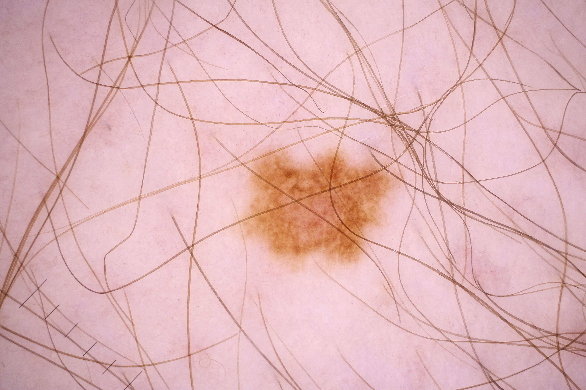
analysis/nine_class_siim2020_pilot/images/ISIC_0224429.jpg data/raw/HAM10000_images_part_1/ISIC_0026391.jpg
data/raw/HAM10000_images_part_1/ISIC_0026391.jpgPair 2: uncertain
pHash 8; dHash 5; geometry unreliable; inliers 0. Automated evidence only; human status: unreviewed.
 analysis/nine_class_siim2020_pilot/images/ISIC_0287683.jpg
analysis/nine_class_siim2020_pilot/images/ISIC_0287683.jpg data/raw/HAM10000_images_part_1/ISIC_0025477.jpg
data/raw/HAM10000_images_part_1/ISIC_0025477.jpgPair 3: uncertain
pHash 10; dHash 3; geometry unreliable; inliers 0. Automated evidence only; human status: unreviewed.
analysis/nine_class_siim2020_pilot/images/ISIC_0287683.jpg data/raw/HAM10000_images_part_1/ISIC_0026987.jpg
data/raw/HAM10000_images_part_1/ISIC_0026987.jpg Pair 4: uncertain
pHash 8; dHash 7; geometry unreliable; inliers 0. Automated evidence only; human status: unreviewed.
analysis/nine_class_siim2020_pilot/images/ISIC_0287683.jpg data/raw/HAM10000_images_part_1/ISIC_0024704.jpg
data/raw/HAM10000_images_part_1/ISIC_0024704.jpg Pair 5: uncertain
pHash 10; dHash 6; geometry unreliable; inliers 0. Automated evidence only; human status: unreviewed.
analysis/nine_class_siim2020_pilot/images/ISIC_0287683.jpg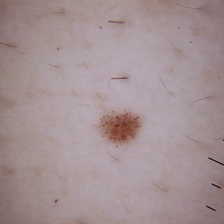
data/isic/data/test/benign/1074.jpg Pair 6: uncertain
pHash 10; dHash 6; geometry unreliable; inliers 0. Automated evidence only; human status: unreviewed.
analysis/nine_class_siim2020_pilot/images/ISIC_0287683.jpg data/raw/HAM10000_images_part_1/ISIC_0028809.jpg
data/raw/HAM10000_images_part_1/ISIC_0028809.jpg Pair 7: uncertain
pHash 9; dHash 8; geometry not_run; inliers . Automated evidence only; human status: unreviewed.
analysis/nine_class_siim2020_pilot/images/ISIC_0287683.jpg data/raw/HAM10000_images_part_1/ISIC_0024876.jpg
data/raw/HAM10000_images_part_1/ISIC_0024876.jpg Pair 8: uncertain
pHash 9; dHash 8; geometry not_run; inliers . Automated evidence only; human status: unreviewed.
analysis/nine_class_siim2020_pilot/images/ISIC_0287683.jpg data/raw/HAM10000_images_part_1/ISIC_0025000.jpg
data/raw/HAM10000_images_part_1/ISIC_0025000.jpg Pair 9: uncertain
pHash 9; dHash 8; geometry not_run; inliers . Automated evidence only; human status: unreviewed.
analysis/nine_class_siim2020_pilot/images/ISIC_0287683.jpg data/raw/HAM10000_images_part_1/ISIC_0027627.jpg
data/raw/HAM10000_images_part_1/ISIC_0027627.jpg Pair 10: uncertain
pHash 10; dHash 8; geometry not_run; inliers . Automated evidence only; human status: unreviewed.
analysis/nine_class_siim2020_pilot/images/ISIC_0287683.jpg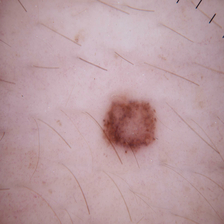
data/isic/data/train/benign/614.jpg Pair 11: uncertain
pHash 10; dHash 8; geometry not_run; inliers . Automated evidence only; human status: unreviewed.
analysis/nine_class_siim2020_pilot/images/ISIC_0287683.jpg data/raw/HAM10000_images_part_1/ISIC_0028139.jpg
data/raw/HAM10000_images_part_1/ISIC_0028139.jpg Pair 12: uncertain
pHash 10; dHash 10; geometry not_run; inliers . Automated evidence only; human status: unreviewed.
analysis/nine_class_siim2020_pilot/images/ISIC_0287683.jpg data/raw/HAM10000_images_part_2/ISIC_0031451.jpg
data/raw/HAM10000_images_part_2/ISIC_0031451.jpg Pair 13: uncertain
pHash 8; dHash 4; geometry unreliable; inliers 0. Automated evidence only; human status: unreviewed.
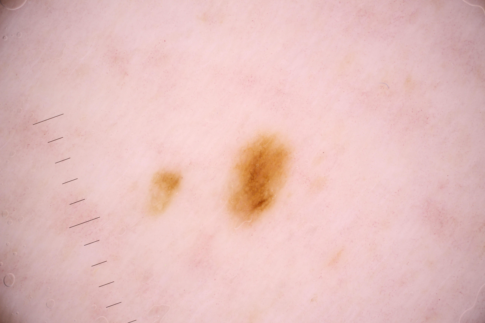
analysis/nine_class_siim2020_pilot/images/ISIC_1133590.jpgdata/isic/data/test/benign/1074.jpgPair 14: uncertain
pHash 8; dHash 4; geometry unreliable; inliers 0. Automated evidence only; human status: unreviewed.
analysis/nine_class_siim2020_pilot/images/ISIC_1133590.jpgdata/raw/HAM10000_images_part_1/ISIC_0028809.jpg Pair 15: uncertain
pHash 9; dHash 4; geometry unreliable; inliers 0. Automated evidence only; human status: unreviewed.
analysis/nine_class_siim2020_pilot/images/ISIC_1133590.jpgdata/raw/HAM10000_images_part_1/ISIC_0024876.jpg Pair 16: uncertain
pHash 10; dHash 5; geometry unreliable; inliers 0. Automated evidence only; human status: unreviewed.
analysis/nine_class_siim2020_pilot/images/ISIC_1133590.jpgdata/raw/HAM10000_images_part_1/ISIC_0024704.jpg Pair 17: uncertain
pHash 9; dHash 7; geometry unreliable; inliers 0. Automated evidence only; human status: unreviewed.
analysis/nine_class_siim2020_pilot/images/ISIC_1133590.jpg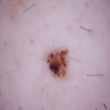
data/isic/data/train/benign/607.jpg Pair 18: uncertain
pHash 10; dHash 6; geometry not_run; inliers . Automated evidence only; human status: unreviewed.
analysis/nine_class_siim2020_pilot/images/ISIC_1133590.jpg data/raw/HAM10000_images_part_1/ISIC_0027127.jpg
data/raw/HAM10000_images_part_1/ISIC_0027127.jpg Pair 19: uncertain
pHash 9; dHash 8; geometry not_run; inliers . Automated evidence only; human status: unreviewed.
analysis/nine_class_siim2020_pilot/images/ISIC_1133590.jpg data/raw/HAM10000_images_part_1/ISIC_0028131.jpg
data/raw/HAM10000_images_part_1/ISIC_0028131.jpg Pair 20: uncertain
pHash 10; dHash 7; geometry not_run; inliers . Automated evidence only; human status: unreviewed.
analysis/nine_class_siim2020_pilot/images/ISIC_1133590.jpg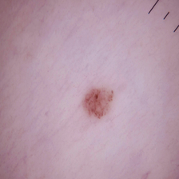
data/isic/data/train/benign/373.jpg Pair 21: uncertain
pHash 10; dHash 7; geometry not_run; inliers . Automated evidence only; human status: unreviewed.
analysis/nine_class_siim2020_pilot/images/ISIC_1133590.jpg data/raw/HAM10000_images_part_1/ISIC_0027756.jpg
data/raw/HAM10000_images_part_1/ISIC_0027756.jpg Pair 22: uncertain
pHash 10; dHash 10; geometry not_run; inliers . Automated evidence only; human status: unreviewed.
analysis/nine_class_siim2020_pilot/images/ISIC_1133590.jpg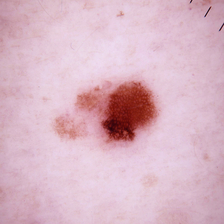
data/isic/data/train/malignant/814.jpg Pair 23: uncertain
pHash 10; dHash 10; geometry not_run; inliers . Automated evidence only; human status: unreviewed.
analysis/nine_class_siim2020_pilot/images/ISIC_1133590.jpg data/raw/HAM10000_images_part_1/ISIC_0024313.jpg
data/raw/HAM10000_images_part_1/ISIC_0024313.jpg Pair 24: uncertain
pHash 5; dHash 5; geometry unreliable; inliers 0. Automated evidence only; human status: unreviewed.
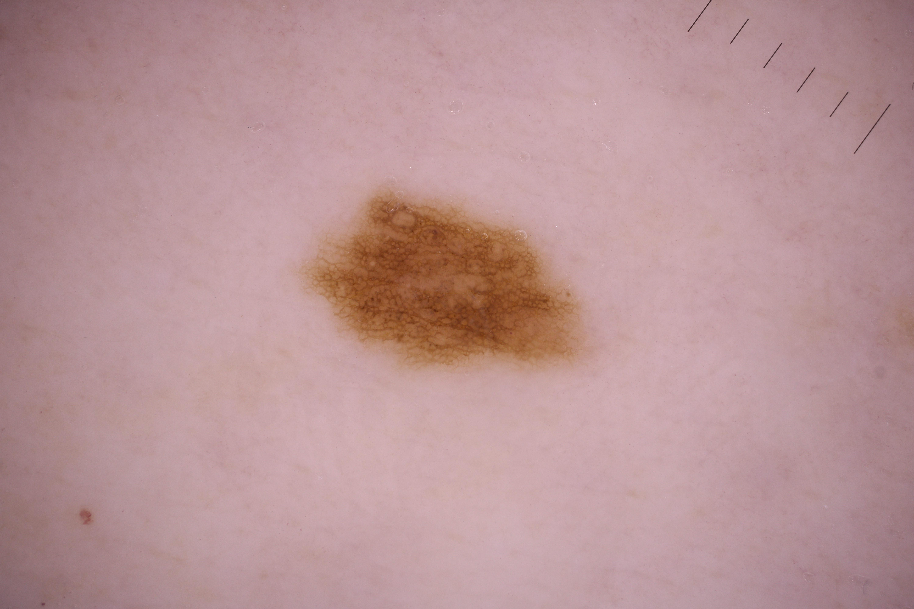
analysis/nine_class_siim2020_pilot/images/ISIC_1944783.jpg data/raw/HAM10000_images_part_2/ISIC_0033916.jpg
data/raw/HAM10000_images_part_2/ISIC_0033916.jpgPair 25: uncertain
pHash 7; dHash 6; geometry unreliable; inliers 0. Automated evidence only; human status: unreviewed.
analysis/nine_class_siim2020_pilot/images/ISIC_1944783.jpg data/raw/HAM10000_images_part_2/ISIC_0032817.jpg
data/raw/HAM10000_images_part_2/ISIC_0032817.jpg Pair 26: uncertain
pHash 8; dHash 5; geometry unreliable; inliers 0. Automated evidence only; human status: unreviewed.
analysis/nine_class_siim2020_pilot/images/ISIC_1944783.jpg data/raw/HAM10000_images_part_2/ISIC_0032157.jpg
data/raw/HAM10000_images_part_2/ISIC_0032157.jpg Pair 27: uncertain
pHash 9; dHash 5; geometry unreliable; inliers 0. Automated evidence only; human status: unreviewed.
analysis/nine_class_siim2020_pilot/images/ISIC_1944783.jpg data/raw/HAM10000_images_part_2/ISIC_0033075.jpg
data/raw/HAM10000_images_part_2/ISIC_0033075.jpg Pair 28: uncertain
pHash 7; dHash 8; geometry unreliable; inliers 0. Automated evidence only; human status: unreviewed.
analysis/nine_class_siim2020_pilot/images/ISIC_1944783.jpg data/raw/HAM10000_images_part_1/ISIC_0026911.jpg
data/raw/HAM10000_images_part_1/ISIC_0026911.jpg Pair 29: uncertain
pHash 9; dHash 6; geometry not_run; inliers . Automated evidence only; human status: unreviewed.
analysis/nine_class_siim2020_pilot/images/ISIC_1944783.jpg data/raw/HAM10000_images_part_2/ISIC_0033244.jpg
data/raw/HAM10000_images_part_2/ISIC_0033244.jpg Pair 30: uncertain
pHash 8; dHash 8; geometry not_run; inliers . Automated evidence only; human status: unreviewed.
analysis/nine_class_siim2020_pilot/images/ISIC_1944783.jpg data/raw/HAM10000_images_part_2/ISIC_0030930.jpg
data/raw/HAM10000_images_part_2/ISIC_0030930.jpg Pair 31: uncertain
pHash 9; dHash 7; geometry not_run; inliers . Automated evidence only; human status: unreviewed.
analysis/nine_class_siim2020_pilot/images/ISIC_1944783.jpg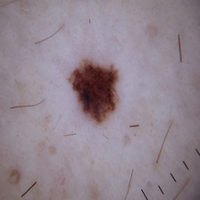
data/isic/data/train/benign/513.jpg Pair 32: uncertain
pHash 9; dHash 7; geometry not_run; inliers . Automated evidence only; human status: unreviewed.
analysis/nine_class_siim2020_pilot/images/ISIC_1944783.jpg data/raw/HAM10000_images_part_1/ISIC_0027959.jpg
data/raw/HAM10000_images_part_1/ISIC_0027959.jpg Pair 33: uncertain
pHash 7; dHash 10; geometry not_run; inliers . Automated evidence only; human status: unreviewed.
analysis/nine_class_siim2020_pilot/images/ISIC_1944783.jpg data/raw/HAM10000_images_part_2/ISIC_0031731.jpg
data/raw/HAM10000_images_part_2/ISIC_0031731.jpg Pair 34: uncertain
pHash 8; dHash 9; geometry not_run; inliers . Automated evidence only; human status: unreviewed.
analysis/nine_class_siim2020_pilot/images/ISIC_1944783.jpg data/raw/HAM10000_images_part_1/ISIC_0026147.jpg
data/raw/HAM10000_images_part_1/ISIC_0026147.jpg Pair 35: uncertain
pHash 10; dHash 7; geometry not_run; inliers . Automated evidence only; human status: unreviewed.
analysis/nine_class_siim2020_pilot/images/ISIC_1944783.jpg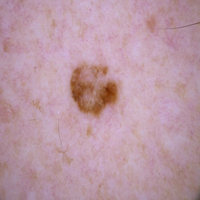
data/isic/data/test/malignant/1280.jpg Pair 36: uncertain
pHash 10; dHash 7; geometry not_run; inliers . Automated evidence only; human status: unreviewed.
analysis/nine_class_siim2020_pilot/images/ISIC_1944783.jpg data/raw/HAM10000_images_part_2/ISIC_0030171.jpg
data/raw/HAM10000_images_part_2/ISIC_0030171.jpg Pair 37: uncertain
pHash 9; dHash 9; geometry not_run; inliers . Automated evidence only; human status: unreviewed.
analysis/nine_class_siim2020_pilot/images/ISIC_1944783.jpg data/raw/HAM10000_images_part_2/ISIC_0034232.jpg
data/raw/HAM10000_images_part_2/ISIC_0034232.jpg Pair 38: uncertain
pHash 9; dHash 10; geometry not_run; inliers . Automated evidence only; human status: unreviewed.
analysis/nine_class_siim2020_pilot/images/ISIC_1944783.jpg data/raw/HAM10000_images_part_1/ISIC_0025907.jpg
data/raw/HAM10000_images_part_1/ISIC_0025907.jpg Pair 39: uncertain
pHash 10; dHash 9; geometry not_run; inliers . Automated evidence only; human status: unreviewed.
analysis/nine_class_siim2020_pilot/images/ISIC_1944783.jpg data/raw/HAM10000_images_part_1/ISIC_0025458.jpg
data/raw/HAM10000_images_part_1/ISIC_0025458.jpg Pair 40: uncertain
pHash 10; dHash 10; geometry not_run; inliers . Automated evidence only; human status: unreviewed.
analysis/nine_class_siim2020_pilot/images/ISIC_1944783.jpg data/raw/HAM10000_images_part_2/ISIC_0034270.jpg
data/raw/HAM10000_images_part_2/ISIC_0034270.jpg Pair 41: uncertain
pHash 10; dHash 8; geometry unreliable; inliers 0. Automated evidence only; human status: unreviewed.
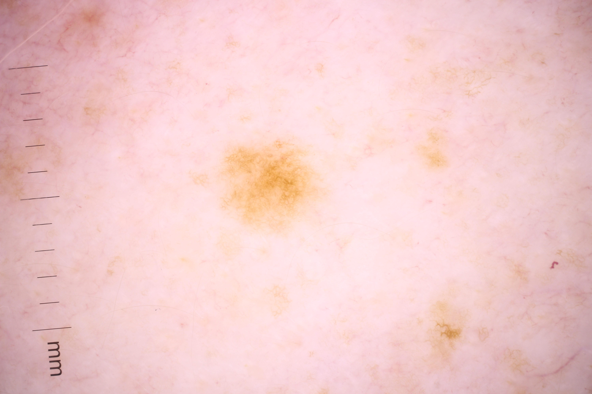
analysis/nine_class_siim2020_pilot/images/ISIC_8159474.jpg data/raw/HAM10000_images_part_1/ISIC_0027002.jpg
data/raw/HAM10000_images_part_1/ISIC_0027002.jpgPair 42: uncertain
pHash 10; dHash 10; geometry unreliable; inliers 0. Automated evidence only; human status: unreviewed.
 analysis/nine_class_siim2020_pilot/images/ISIC_0945844.jpg
analysis/nine_class_siim2020_pilot/images/ISIC_0945844.jpg data/raw/HAM10000_images_part_1/ISIC_0027478.jpg
data/raw/HAM10000_images_part_1/ISIC_0027478.jpgPair 43: uncertain
pHash 10; dHash 10; geometry unreliable; inliers 0. Automated evidence only; human status: unreviewed.
 analysis/nine_class_siim2020_pilot/images/ISIC_0704859.jpg
analysis/nine_class_siim2020_pilot/images/ISIC_0704859.jpg data/raw/HAM10000_images_part_1/ISIC_0025225.jpg
data/raw/HAM10000_images_part_1/ISIC_0025225.jpgPair 44: uncertain
pHash 8; dHash 5; geometry unreliable; inliers 0. Automated evidence only; human status: unreviewed.
 analysis/nine_class_siim2020_pilot/images/ISIC_3463384.jpg
analysis/nine_class_siim2020_pilot/images/ISIC_3463384.jpg data/raw/HAM10000_images_part_2/ISIC_0032689.jpg
data/raw/HAM10000_images_part_2/ISIC_0032689.jpgPair 45: uncertain
pHash 9; dHash 9; geometry unreliable; inliers 0. Automated evidence only; human status: unreviewed.
analysis/nine_class_siim2020_pilot/images/ISIC_3463384.jpg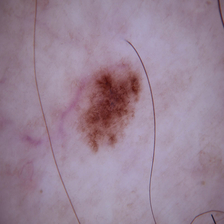
data/isic/data/train/benign/1656.jpg Pair 46: uncertain
pHash 9; dHash 9; geometry unreliable; inliers 0. Automated evidence only; human status: unreviewed.
analysis/nine_class_siim2020_pilot/images/ISIC_3463384.jpg data/raw/HAM10000_images_part_2/ISIC_0029749.jpg
data/raw/HAM10000_images_part_2/ISIC_0029749.jpg Pair 47: uncertain
pHash 9; dHash 10; geometry unreliable; inliers 0. Automated evidence only; human status: unreviewed.
analysis/nine_class_siim2020_pilot/images/ISIC_3463384.jpg data/raw/HAM10000_images_part_2/ISIC_0033680.jpg
data/raw/HAM10000_images_part_2/ISIC_0033680.jpg Pair 48: uncertain
pHash 8; dHash 6; geometry unreliable; inliers 0. Automated evidence only; human status: unreviewed.
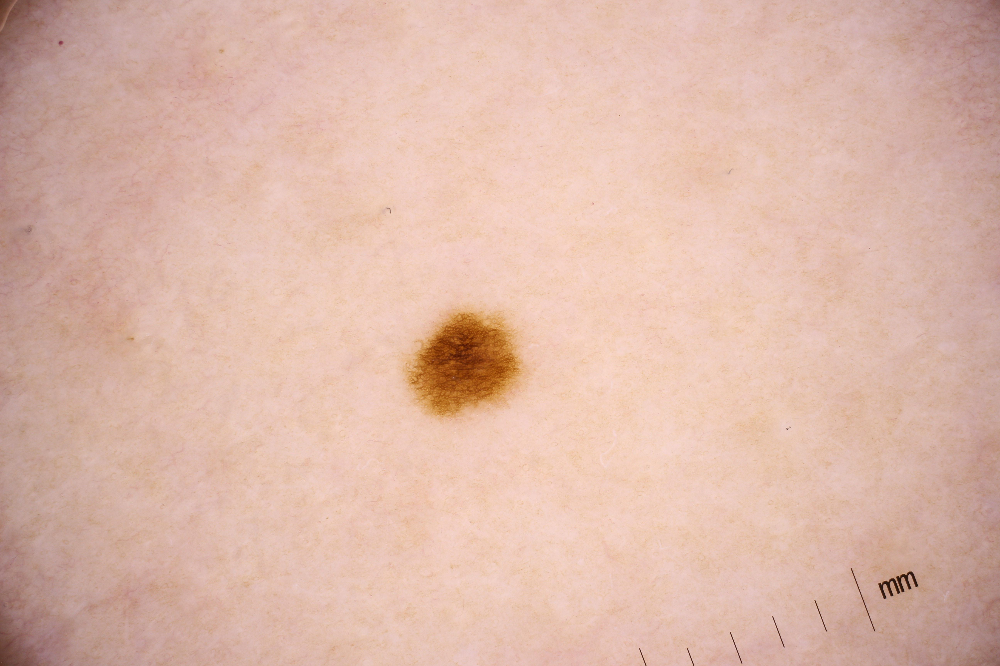
analysis/nine_class_siim2020_pilot/images/ISIC_6754247.jpg data/raw/HAM10000_images_part_2/ISIC_0033409.jpg
data/raw/HAM10000_images_part_2/ISIC_0033409.jpgPair 49: uncertain
pHash 9; dHash 7; geometry unreliable; inliers 0. Automated evidence only; human status: unreviewed.
analysis/nine_class_siim2020_pilot/images/ISIC_6754247.jpg data/raw/HAM10000_images_part_2/ISIC_0031293.jpg
data/raw/HAM10000_images_part_2/ISIC_0031293.jpg Pair 50: uncertain
pHash 10; dHash 7; geometry unreliable; inliers 0. Automated evidence only; human status: unreviewed.
analysis/nine_class_siim2020_pilot/images/ISIC_6754247.jpg data/raw/HAM10000_images_part_2/ISIC_0032541.jpg
data/raw/HAM10000_images_part_2/ISIC_0032541.jpg Pair 51: uncertain
pHash 9; dHash 9; geometry unreliable; inliers 0. Automated evidence only; human status: unreviewed.
analysis/nine_class_siim2020_pilot/images/ISIC_6754247.jpgdata/raw/HAM10000_images_part_1/ISIC_0027478.jpg Pair 52: uncertain
pHash 9; dHash 9; geometry unreliable; inliers 0. Automated evidence only; human status: unreviewed.
analysis/nine_class_siim2020_pilot/images/ISIC_6754247.jpg data/raw/HAM10000_images_part_2/ISIC_0032405.jpg
data/raw/HAM10000_images_part_2/ISIC_0032405.jpg Pair 53: uncertain
pHash 10; dHash 8; geometry not_run; inliers . Automated evidence only; human status: unreviewed.
analysis/nine_class_siim2020_pilot/images/ISIC_6754247.jpg data/raw/HAM10000_images_part_1/ISIC_0027948.jpg
data/raw/HAM10000_images_part_1/ISIC_0027948.jpg Pair 54: uncertain
pHash 10; dHash 9; geometry not_run; inliers . Automated evidence only; human status: unreviewed.
analysis/nine_class_siim2020_pilot/images/ISIC_6754247.jpg data/isic/data/train/benign/508.jpg
data/isic/data/train/benign/508.jpg Pair 55: uncertain
pHash 9; dHash 4; geometry unreliable; inliers 0. Automated evidence only; human status: unreviewed.
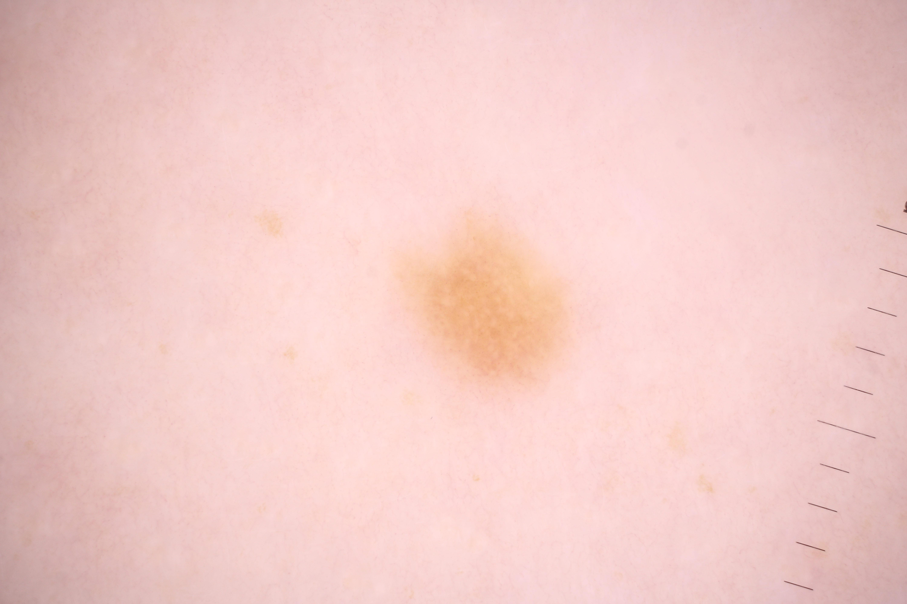
analysis/nine_class_siim2020_pilot/images/ISIC_6786759.jpg data/isic/data/test/benign/245.jpg
data/isic/data/test/benign/245.jpgPair 56: uncertain
pHash 9; dHash 4; geometry unreliable; inliers 0. Automated evidence only; human status: unreviewed.
analysis/nine_class_siim2020_pilot/images/ISIC_6786759.jpg data/raw/HAM10000_images_part_1/ISIC_0027538.jpg
data/raw/HAM10000_images_part_1/ISIC_0027538.jpg Pair 57: uncertain
pHash 10; dHash 3; geometry unreliable; inliers 0. Automated evidence only; human status: unreviewed.
analysis/nine_class_siim2020_pilot/images/ISIC_6786759.jpgdata/isic/data/test/benign/1074.jpg Pair 58: uncertain
pHash 10; dHash 3; geometry unreliable; inliers 0. Automated evidence only; human status: unreviewed.
analysis/nine_class_siim2020_pilot/images/ISIC_6786759.jpgdata/raw/HAM10000_images_part_1/ISIC_0028809.jpg Pair 59: uncertain
pHash 9; dHash 5; geometry unreliable; inliers 0. Automated evidence only; human status: unreviewed.
analysis/nine_class_siim2020_pilot/images/ISIC_6786759.jpgdata/raw/HAM10000_images_part_1/ISIC_0024876.jpg Pair 60: uncertain
pHash 10; dHash 5; geometry not_run; inliers . Automated evidence only; human status: unreviewed.
analysis/nine_class_siim2020_pilot/images/ISIC_6786759.jpg data/raw/HAM10000_images_part_2/ISIC_0031933.jpg
data/raw/HAM10000_images_part_2/ISIC_0031933.jpg Pair 61: uncertain
pHash 9; dHash 7; geometry not_run; inliers . Automated evidence only; human status: unreviewed.
analysis/nine_class_siim2020_pilot/images/ISIC_6786759.jpg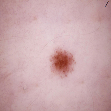
data/isic/data/test/benign/1183.jpg Pair 62: uncertain
pHash 9; dHash 7; geometry not_run; inliers . Automated evidence only; human status: unreviewed.
analysis/nine_class_siim2020_pilot/images/ISIC_6786759.jpg data/raw/HAM10000_images_part_1/ISIC_0028963.jpg
data/raw/HAM10000_images_part_1/ISIC_0028963.jpg Pair 63: uncertain
pHash 9; dHash 7; geometry not_run; inliers . Automated evidence only; human status: unreviewed.
analysis/nine_class_siim2020_pilot/images/ISIC_6786759.jpg data/raw/HAM10000_images_part_2/ISIC_0033852.jpg
data/raw/HAM10000_images_part_2/ISIC_0033852.jpg Pair 64: uncertain
pHash 10; dHash 6; geometry not_run; inliers . Automated evidence only; human status: unreviewed.
analysis/nine_class_siim2020_pilot/images/ISIC_6786759.jpgdata/isic/data/train/benign/373.jpg Pair 65: uncertain
pHash 10; dHash 6; geometry not_run; inliers . Automated evidence only; human status: unreviewed.
analysis/nine_class_siim2020_pilot/images/ISIC_6786759.jpgdata/raw/HAM10000_images_part_1/ISIC_0024704.jpg Pair 66: uncertain
pHash 10; dHash 6; geometry not_run; inliers . Automated evidence only; human status: unreviewed.
analysis/nine_class_siim2020_pilot/images/ISIC_6786759.jpgdata/raw/HAM10000_images_part_1/ISIC_0027756.jpg Pair 67: uncertain
pHash 10; dHash 6; geometry not_run; inliers . Automated evidence only; human status: unreviewed.
analysis/nine_class_siim2020_pilot/images/ISIC_6786759.jpg data/raw/HAM10000_images_part_2/ISIC_0033237.jpg
data/raw/HAM10000_images_part_2/ISIC_0033237.jpg Pair 68: uncertain
pHash 10; dHash 7; geometry not_run; inliers . Automated evidence only; human status: unreviewed.
analysis/nine_class_siim2020_pilot/images/ISIC_6786759.jpgdata/raw/HAM10000_images_part_1/ISIC_0027127.jpg Pair 69: uncertain
pHash 8; dHash 10; geometry not_run; inliers . Automated evidence only; human status: unreviewed.
analysis/nine_class_siim2020_pilot/images/ISIC_6786759.jpg data/raw/HAM10000_images_part_1/ISIC_0027051.jpg
data/raw/HAM10000_images_part_1/ISIC_0027051.jpg Pair 70: uncertain
pHash 9; dHash 9; geometry not_run; inliers . Automated evidence only; human status: unreviewed.
analysis/nine_class_siim2020_pilot/images/ISIC_6786759.jpgdata/raw/HAM10000_images_part_1/ISIC_0025000.jpg Pair 71: uncertain
pHash 10; dHash 8; geometry not_run; inliers . Automated evidence only; human status: unreviewed.
analysis/nine_class_siim2020_pilot/images/ISIC_6786759.jpgdata/raw/HAM10000_images_part_1/ISIC_0025477.jpg Pair 72: uncertain
pHash 10; dHash 8; geometry unreliable; inliers 0. Automated evidence only; human status: unreviewed.
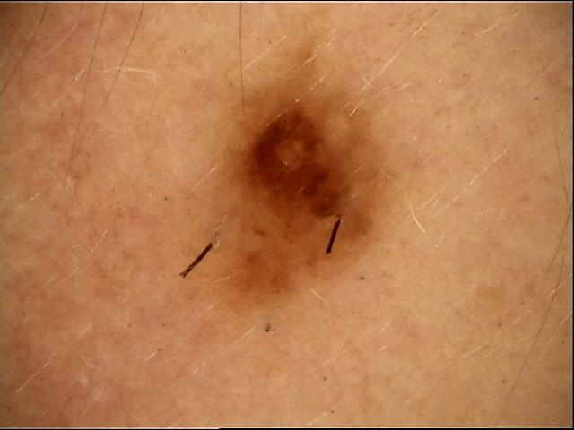
analysis/nine_class_siim2020_pilot/images/ISIC_7205039.jpg data/raw/HAM10000_images_part_2/ISIC_0034261.jpg
data/raw/HAM10000_images_part_2/ISIC_0034261.jpgPair 73: uncertain
pHash 5; dHash 4; geometry unreliable; inliers 0. Automated evidence only; human status: unreviewed.
Pair 74: uncertain
pHash 5; dHash 4; geometry unreliable; inliers 0. Automated evidence only; human status: unreviewed.
analysis/nine_class_siim2020_pilot/images/ISIC_4676156.jpg data/raw/HAM10000_images_part_1/ISIC_0027797.jpg
data/raw/HAM10000_images_part_1/ISIC_0027797.jpg Pair 75: uncertain
pHash 5; dHash 6; geometry unreliable; inliers 0. Automated evidence only; human status: unreviewed.
analysis/nine_class_siim2020_pilot/images/ISIC_4676156.jpg data/raw/HAM10000_images_part_2/ISIC_0030251.jpg
data/raw/HAM10000_images_part_2/ISIC_0030251.jpg Pair 76: uncertain
pHash 3; dHash 9; geometry unreliable; inliers 0. Automated evidence only; human status: unreviewed.
analysis/nine_class_siim2020_pilot/images/ISIC_4676156.jpg data/raw/HAM10000_images_part_2/ISIC_0032195.jpg
data/raw/HAM10000_images_part_2/ISIC_0032195.jpg Pair 77: uncertain
pHash 4; dHash 8; geometry unreliable; inliers 0. Automated evidence only; human status: unreviewed.
analysis/nine_class_siim2020_pilot/images/ISIC_4676156.jpg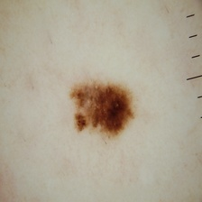
data/isic/data/train/malignant/99.jpg Pair 78: uncertain
pHash 4; dHash 8; geometry not_run; inliers . Automated evidence only; human status: unreviewed.
analysis/nine_class_siim2020_pilot/images/ISIC_4676156.jpgdata/raw/HAM10000_images_part_1/ISIC_0024704.jpg Pair 79: uncertain
pHash 4; dHash 9; geometry not_run; inliers . Automated evidence only; human status: unreviewed.
analysis/nine_class_siim2020_pilot/images/ISIC_4676156.jpg data/raw/HAM10000_images_part_2/ISIC_0032471.jpg
data/raw/HAM10000_images_part_2/ISIC_0032471.jpg Pair 80: uncertain
pHash 5; dHash 8; geometry not_run; inliers . Automated evidence only; human status: unreviewed.
analysis/nine_class_siim2020_pilot/images/ISIC_4676156.jpg data/raw/HAM10000_images_part_2/ISIC_0029975.jpg
data/raw/HAM10000_images_part_2/ISIC_0029975.jpg Pair 81: uncertain
pHash 6; dHash 7; geometry not_run; inliers . Automated evidence only; human status: unreviewed.
analysis/nine_class_siim2020_pilot/images/ISIC_4676156.jpgdata/isic/data/train/benign/614.jpg Pair 82: uncertain
pHash 6; dHash 7; geometry not_run; inliers . Automated evidence only; human status: unreviewed.
analysis/nine_class_siim2020_pilot/images/ISIC_4676156.jpgdata/raw/HAM10000_images_part_1/ISIC_0028139.jpg Pair 83: uncertain
pHash 6; dHash 7; geometry not_run; inliers . Automated evidence only; human status: unreviewed.
analysis/nine_class_siim2020_pilot/images/ISIC_4676156.jpgdata/raw/HAM10000_images_part_2/ISIC_0031451.jpg Pair 84: uncertain
pHash 7; dHash 7; geometry not_run; inliers . Automated evidence only; human status: unreviewed.
analysis/nine_class_siim2020_pilot/images/ISIC_4676156.jpgdata/raw/HAM10000_images_part_1/ISIC_0024876.jpg Pair 85: uncertain
pHash 8; dHash 6; geometry not_run; inliers . Automated evidence only; human status: unreviewed.
analysis/nine_class_siim2020_pilot/images/ISIC_4676156.jpg data/raw/HAM10000_images_part_1/ISIC_0024933.jpg
data/raw/HAM10000_images_part_1/ISIC_0024933.jpg Pair 86: uncertain
pHash 7; dHash 8; geometry not_run; inliers . Automated evidence only; human status: unreviewed.
analysis/nine_class_siim2020_pilot/images/ISIC_4676156.jpg data/raw/HAM10000_images_part_1/ISIC_0024908.jpg
data/raw/HAM10000_images_part_1/ISIC_0024908.jpg Pair 87: uncertain
pHash 7; dHash 8; geometry not_run; inliers . Automated evidence only; human status: unreviewed.
analysis/nine_class_siim2020_pilot/images/ISIC_4676156.jpg data/raw/HAM10000_images_part_2/ISIC_0030079.jpg
data/raw/HAM10000_images_part_2/ISIC_0030079.jpg Pair 88: uncertain
pHash 8; dHash 7; geometry not_run; inliers . Automated evidence only; human status: unreviewed.
analysis/nine_class_siim2020_pilot/images/ISIC_4676156.jpg data/raw/HAM10000_images_part_1/ISIC_0026922.jpg
data/raw/HAM10000_images_part_1/ISIC_0026922.jpg Pair 89: uncertain
pHash 8; dHash 7; geometry not_run; inliers . Automated evidence only; human status: unreviewed.
analysis/nine_class_siim2020_pilot/images/ISIC_4676156.jpgdata/raw/HAM10000_images_part_2/ISIC_0031933.jpg Pair 90: uncertain
pHash 9; dHash 6; geometry not_run; inliers . Automated evidence only; human status: unreviewed.
analysis/nine_class_siim2020_pilot/images/ISIC_4676156.jpg data/raw/HAM10000_images_part_2/ISIC_0030663.jpg
data/raw/HAM10000_images_part_2/ISIC_0030663.jpg Pair 91: uncertain
pHash 7; dHash 9; geometry not_run; inliers . Automated evidence only; human status: unreviewed.
analysis/nine_class_siim2020_pilot/images/ISIC_4676156.jpg data/raw/HAM10000_images_part_2/ISIC_0032228.jpg
data/raw/HAM10000_images_part_2/ISIC_0032228.jpg Pair 92: uncertain
pHash 9; dHash 7; geometry not_run; inliers . Automated evidence only; human status: unreviewed.
analysis/nine_class_siim2020_pilot/images/ISIC_4676156.jpg data/raw/HAM10000_images_part_2/ISIC_0030140.jpg
data/raw/HAM10000_images_part_2/ISIC_0030140.jpg Pair 93: uncertain
pHash 10; dHash 6; geometry not_run; inliers . Automated evidence only; human status: unreviewed.
analysis/nine_class_siim2020_pilot/images/ISIC_4676156.jpgdata/isic/data/train/benign/373.jpg Pair 94: uncertain
pHash 10; dHash 6; geometry not_run; inliers . Automated evidence only; human status: unreviewed.
analysis/nine_class_siim2020_pilot/images/ISIC_4676156.jpgdata/raw/HAM10000_images_part_1/ISIC_0027756.jpg Pair 95: uncertain
pHash 8; dHash 9; geometry not_run; inliers . Automated evidence only; human status: unreviewed.
analysis/nine_class_siim2020_pilot/images/ISIC_4676156.jpg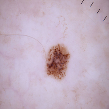
data/isic/data/test/malignant/1220.jpg Pair 96: uncertain
pHash 8; dHash 9; geometry not_run; inliers . Automated evidence only; human status: unreviewed.
analysis/nine_class_siim2020_pilot/images/ISIC_4676156.jpg data/raw/HAM10000_images_part_2/ISIC_0029480.jpg
data/raw/HAM10000_images_part_2/ISIC_0029480.jpg Pair 97: uncertain
pHash 9; dHash 8; geometry not_run; inliers . Automated evidence only; human status: unreviewed.
analysis/nine_class_siim2020_pilot/images/ISIC_4676156.jpg data/raw/HAM10000_images_part_2/ISIC_0031064.jpg
data/raw/HAM10000_images_part_2/ISIC_0031064.jpg Pair 98: uncertain
pHash 9; dHash 8; geometry not_run; inliers . Automated evidence only; human status: unreviewed.
analysis/nine_class_siim2020_pilot/images/ISIC_4676156.jpg data/raw/HAM10000_images_part_2/ISIC_0032310.jpg
data/raw/HAM10000_images_part_2/ISIC_0032310.jpg Pair 99: uncertain
pHash 9; dHash 9; geometry not_run; inliers . Automated evidence only; human status: unreviewed.
analysis/nine_class_siim2020_pilot/images/ISIC_4676156.jpgdata/raw/HAM10000_images_part_1/ISIC_0025000.jpg Pair 100: uncertain
pHash 9; dHash 9; geometry not_run; inliers . Automated evidence only; human status: unreviewed.
analysis/nine_class_siim2020_pilot/images/ISIC_4676156.jpg data/raw/HAM10000_images_part_1/ISIC_0026711.jpg
data/raw/HAM10000_images_part_1/ISIC_0026711.jpg Pair 101: uncertain
pHash 9; dHash 9; geometry not_run; inliers . Automated evidence only; human status: unreviewed.
analysis/nine_class_siim2020_pilot/images/ISIC_4676156.jpgdata/raw/HAM10000_images_part_1/ISIC_0027627.jpg Pair 102: uncertain
pHash 9; dHash 9; geometry not_run; inliers . Automated evidence only; human status: unreviewed.
analysis/nine_class_siim2020_pilot/images/ISIC_4676156.jpg data/raw/HAM10000_images_part_2/ISIC_0031838.jpg
data/raw/HAM10000_images_part_2/ISIC_0031838.jpg Pair 103: uncertain
pHash 10; dHash 8; geometry not_run; inliers . Automated evidence only; human status: unreviewed.
analysis/nine_class_siim2020_pilot/images/ISIC_4676156.jpgdata/raw/HAM10000_images_part_2/ISIC_0033237.jpg Pair 104: uncertain
pHash 9; dHash 10; geometry not_run; inliers . Automated evidence only; human status: unreviewed.
analysis/nine_class_siim2020_pilot/images/ISIC_4676156.jpg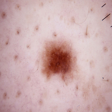
data/isic/data/test/benign/1025.jpg Pair 105: uncertain
pHash 9; dHash 10; geometry not_run; inliers . Automated evidence only; human status: unreviewed.
analysis/nine_class_siim2020_pilot/images/ISIC_4676156.jpg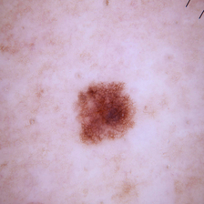
data/isic/data/test/malignant/1074.jpg Pair 106: uncertain
pHash 9; dHash 10; geometry not_run; inliers . Automated evidence only; human status: unreviewed.
analysis/nine_class_siim2020_pilot/images/ISIC_4676156.jpg data/raw/HAM10000_images_part_1/ISIC_0027507.jpg
data/raw/HAM10000_images_part_1/ISIC_0027507.jpg Pair 107: uncertain
pHash 9; dHash 10; geometry not_run; inliers . Automated evidence only; human status: unreviewed.
analysis/nine_class_siim2020_pilot/images/ISIC_4676156.jpg data/raw/HAM10000_images_part_1/ISIC_0028744.jpg
data/raw/HAM10000_images_part_1/ISIC_0028744.jpg Pair 108: uncertain
pHash 9; dHash 10; geometry not_run; inliers . Automated evidence only; human status: unreviewed.
analysis/nine_class_siim2020_pilot/images/ISIC_4676156.jpg data/raw/HAM10000_images_part_2/ISIC_0031802.jpg
data/raw/HAM10000_images_part_2/ISIC_0031802.jpg Pair 109: uncertain
pHash 10; dHash 9; geometry not_run; inliers . Automated evidence only; human status: unreviewed.
analysis/nine_class_siim2020_pilot/images/ISIC_4676156.jpg data/raw/HAM10000_images_part_1/ISIC_0024377.jpg
data/raw/HAM10000_images_part_1/ISIC_0024377.jpg Pair 110: uncertain
pHash 10; dHash 10; geometry not_run; inliers . Automated evidence only; human status: unreviewed.
analysis/nine_class_siim2020_pilot/images/ISIC_4676156.jpg data/raw/HAM10000_images_part_2/ISIC_0034206.jpg
data/raw/HAM10000_images_part_2/ISIC_0034206.jpg Pair 111: uncertain
pHash 9; dHash 10; geometry unreliable; inliers 0. Automated evidence only; human status: unreviewed.
 analysis/nine_class_siim2020_pilot/images/ISIC_1412350.jpg
analysis/nine_class_siim2020_pilot/images/ISIC_1412350.jpg data/raw/HAM10000_images_part_2/ISIC_0033239.jpg
data/raw/HAM10000_images_part_2/ISIC_0033239.jpgPair 112: uncertain
pHash 10; dHash 7; geometry unreliable; inliers 0. Automated evidence only; human status: unreviewed.
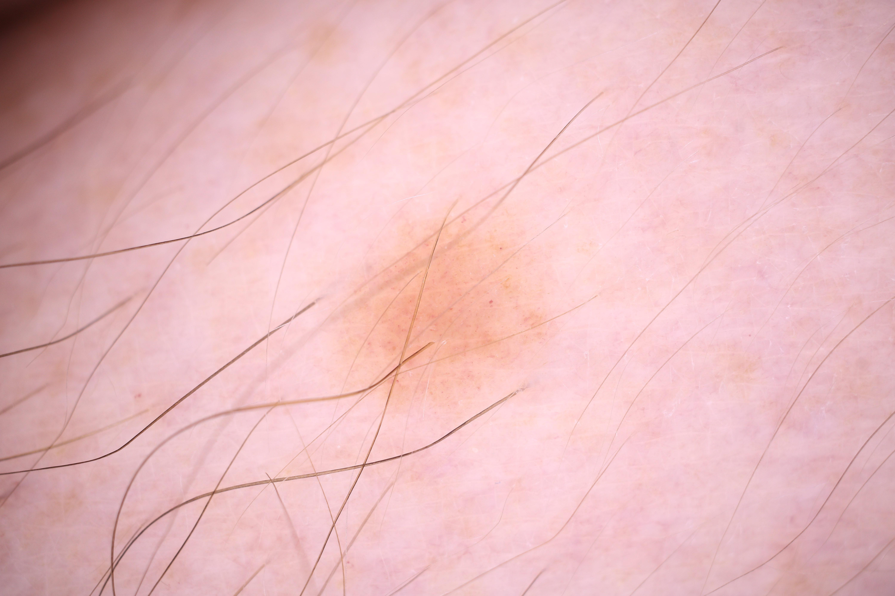
analysis/nine_class_siim2020_pilot/images/ISIC_0885785.jpg data/raw/HAM10000_images_part_2/ISIC_0032568.jpg
data/raw/HAM10000_images_part_2/ISIC_0032568.jpgPair 113: uncertain
pHash 9; dHash 6; geometry unreliable; inliers 0. Automated evidence only; human status: unreviewed.
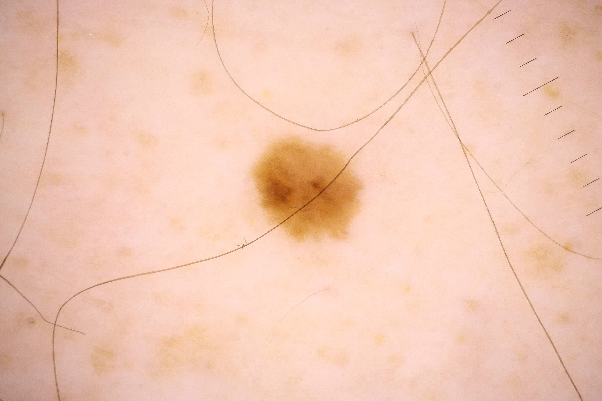
analysis/nine_class_siim2020_pilot/images/ISIC_6539116.jpg data/raw/HAM10000_images_part_2/ISIC_0033133.jpg
data/raw/HAM10000_images_part_2/ISIC_0033133.jpgPair 114: uncertain
pHash 8; dHash 10; geometry unreliable; inliers 0. Automated evidence only; human status: unreviewed.
analysis/nine_class_siim2020_pilot/images/ISIC_6539116.jpg data/isic/data/train/benign/430.jpg
data/isic/data/train/benign/430.jpg Pair 115: uncertain
pHash 8; dHash 10; geometry unreliable; inliers 0. Automated evidence only; human status: unreviewed.
analysis/nine_class_siim2020_pilot/images/ISIC_6539116.jpg data/raw/HAM10000_images_part_1/ISIC_0027847.jpg
data/raw/HAM10000_images_part_1/ISIC_0027847.jpg Pair 116: uncertain
pHash 10; dHash 7; geometry unreliable; inliers 0. Automated evidence only; human status: unreviewed.
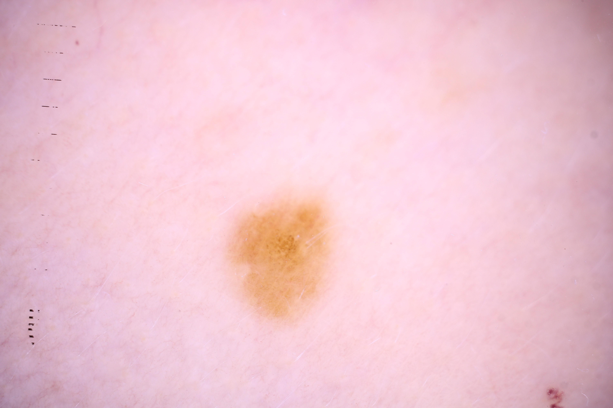
analysis/nine_class_siim2020_pilot/images/ISIC_6370977.jpgdata/raw/HAM10000_images_part_2/ISIC_0031293.jpg